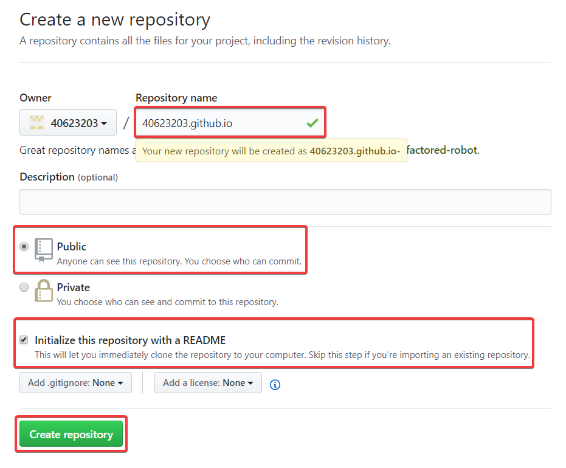
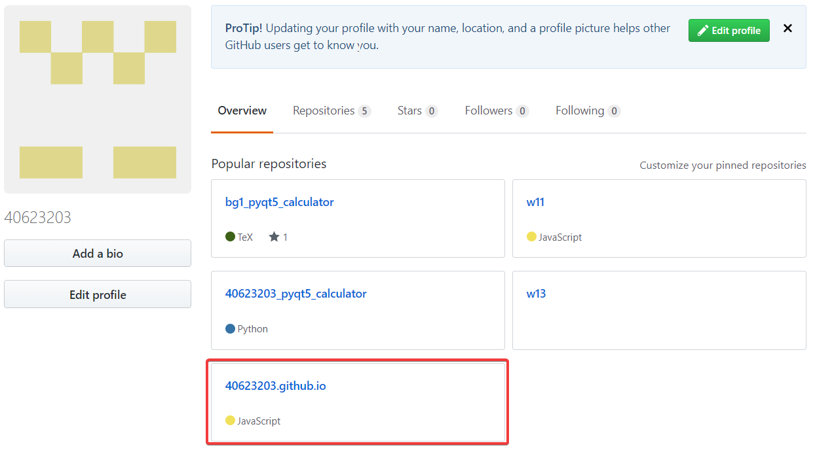
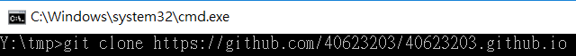
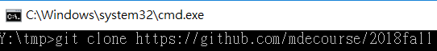
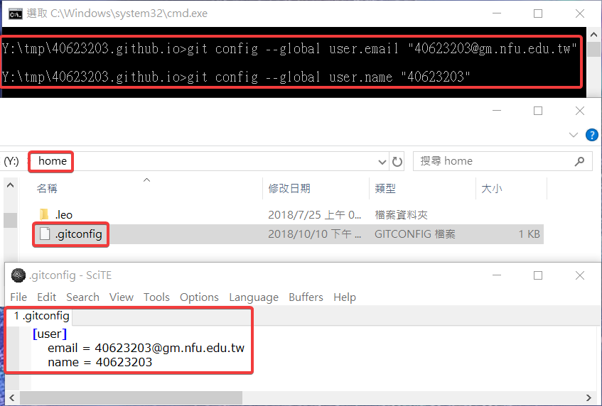
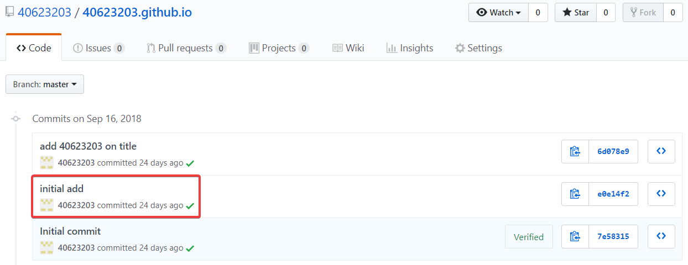
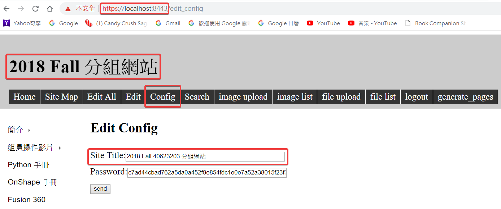
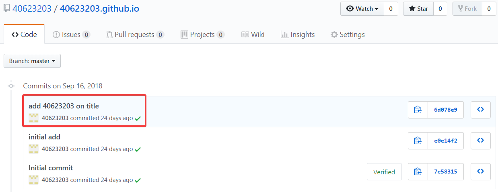

Week1
大學就像餐廳，不只要會吃，還要學習如何做得更好吃
1. 在github帳號下，新增一個New repository，名為 : 學號.github.io


2. 將自己新增的倉儲與老師的倉儲 clone 下來


3. 將老師的資料複製，除了 .git 和 README.me 全部貼入自己的資料夾

4. 綁定帳號及用 SciTE 確認是否正確

5. 用 git status 查看所有檔案目前的狀況，之後再 git add . > git commit -m "initial add " >git push ，將剛剛新增的檔案推上去

6. 開啟 python wsgi.py ，進入近端，更改標題名稱

7. 重複git status> git add。> git commit -m“在標題上添加名稱”> git push後完成

Q&A :
Q：What is Onshape？
A：Onshape 是一個不需要下載軟體就可以隨時隨地利用網路的連結來進行繪圖，團隊可以在不同地方對單一設計進行修改，不需要特定的電腦或軟體就可以使用，透過雲端儲存，真的是非常的方便。
https://www.g2crowd.com/products/onshape/reviews
Q：Why choose Onshape？
A：Onshape 有7種方式（密碼保護訪問、雙因素認證、數據庫備份程序、專用服務器、通信安全、加密、第三方測試）來保證設計的保密，即使黑客將 Onshape 服務器上的數據成功地破壞掉，也無法使用它，因為數據經過加密和格式化，所以是十分的安全，可以放心地使用它。
https://www.onshape.com/cad-blog/7-reasons-why-onshape-better-protects-your-cad-data
https://en.wikipedia.org/wiki/Onshape
心得：
今天上課是我第一次聽說過 Onshape 這個名稱，一直不曉得它是甚麼，因為好奇心驅使，所以就上網去瞧瞧究竟是甚麼，原來是一個線上繪圖軟體，經過了很多年的開發及測試才完成的成品。透過近端、遠端來維護及更新網誌，無法解決的問題也可以在 comment 提出，找出錯誤並理解後，也可以在網路上跟大家分享解決辦法。
組員操作影片 << Previous Next >> Python 手冊